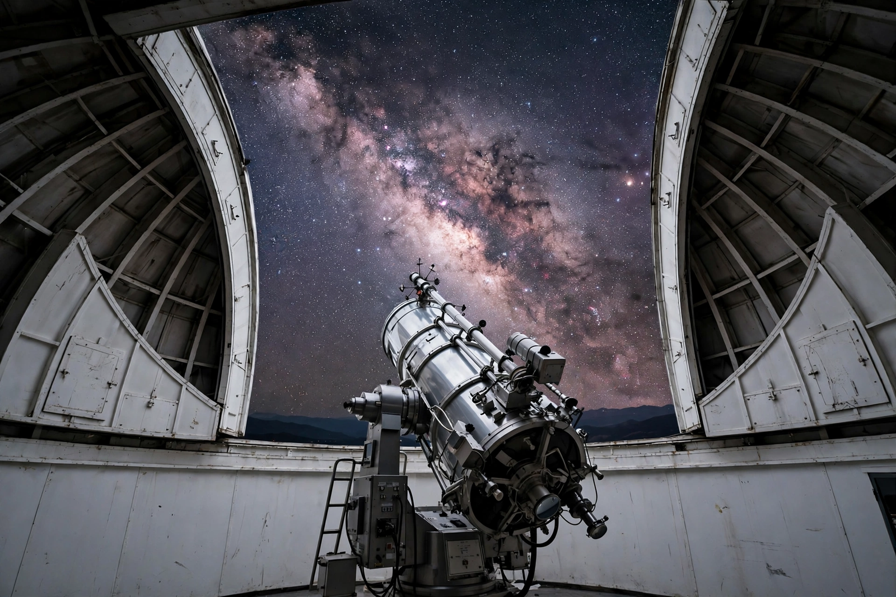

From Wikipedia, the free encyclopedia
| Telescope | |
|---|---|
| Function | Collects and magnifies light from distant objects |
| Invented | Netherlands, 1608 (Lippershey et al.) |
| Types | Refracting, reflecting, radio, space telescopes |

A telescope is an instrument that makes distant objects appear magnified by collecting and focusing light (or other electromagnetic radiation). Patented in the Netherlands in 1608, it was turned skyward by Galileo, transforming astronomy within a year.
Refractors use lenses; reflectors (Newton, 1668) use mirrors and dominate large instruments. 20th-century radio telescopes opened new windows; space telescopes such as Hubble and Webb escape the atmosphere entirely. Giant ground telescopes use segmented mirrors and adaptive optics.
Galileo Galilei · Hubble Space Telescope · James Webb Space Telescope